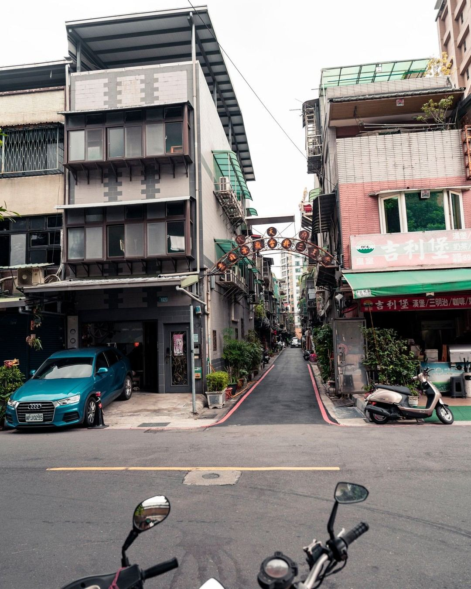
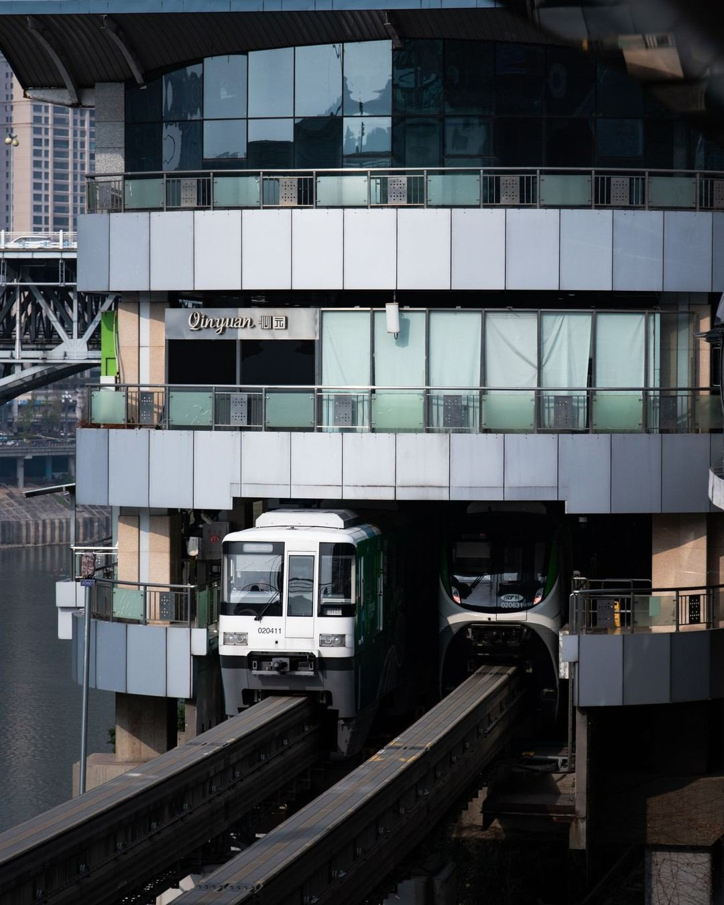
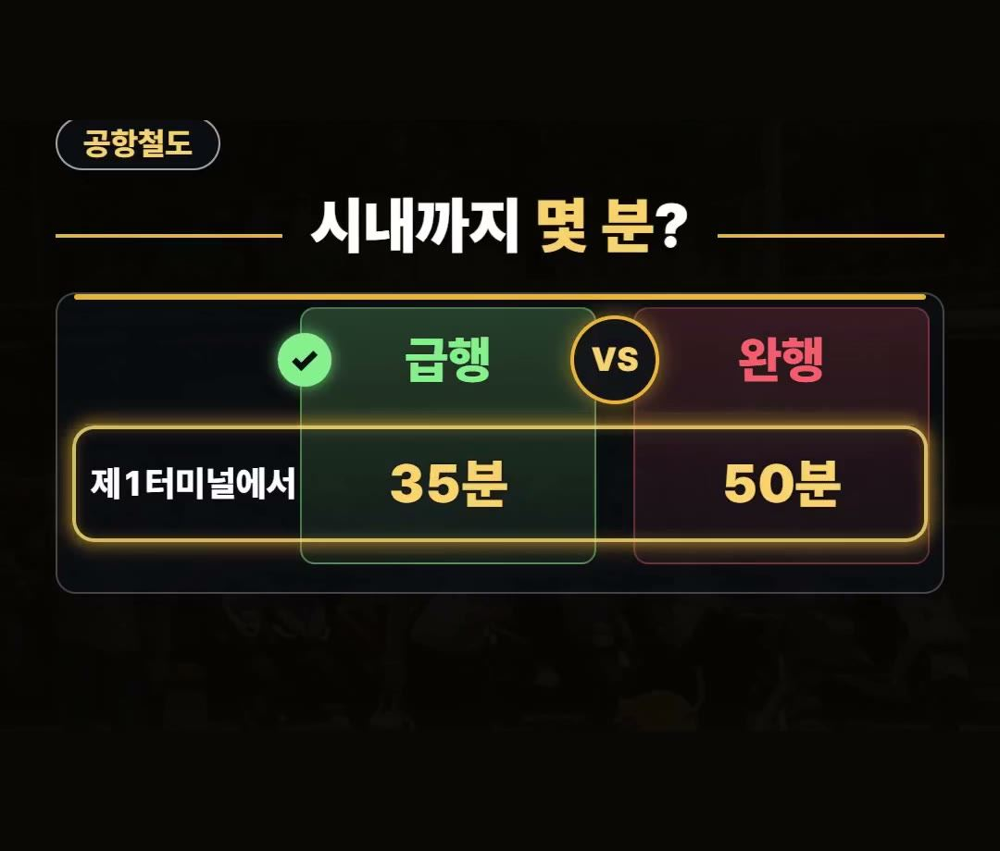
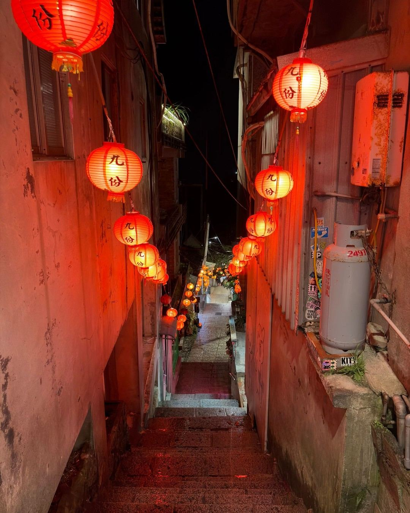
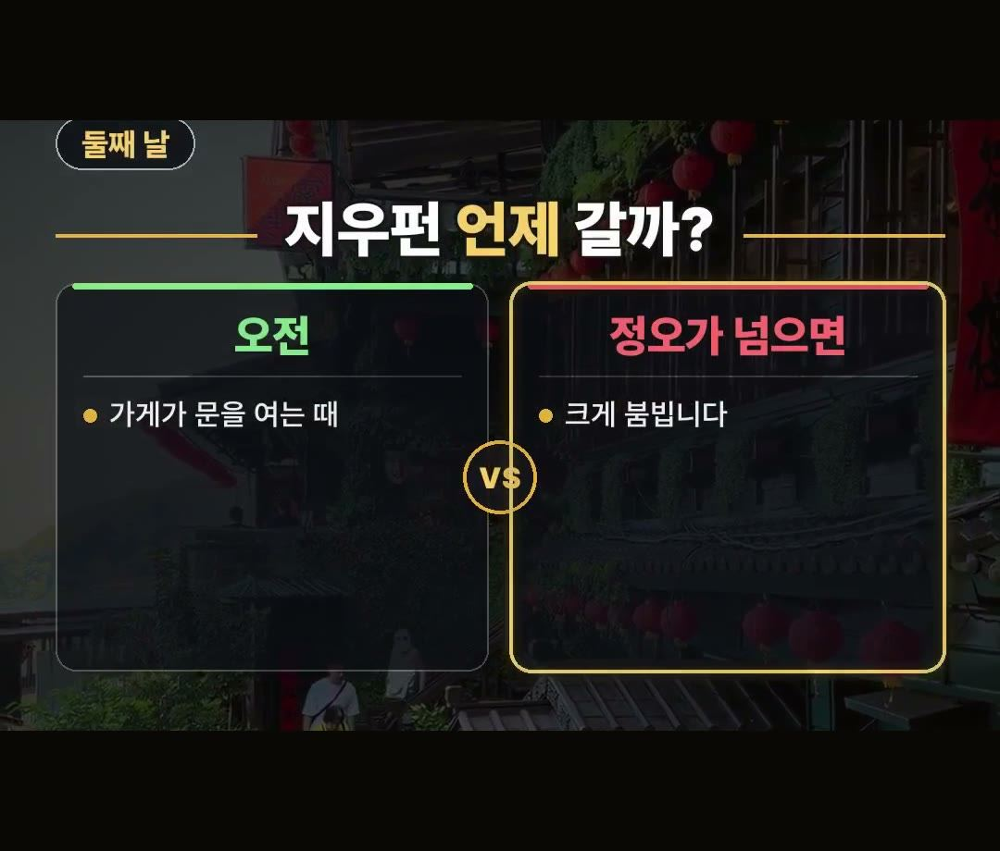
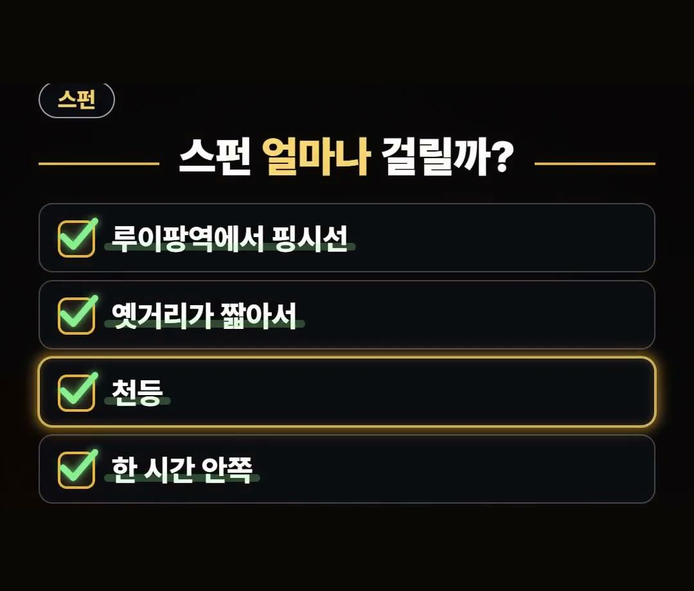
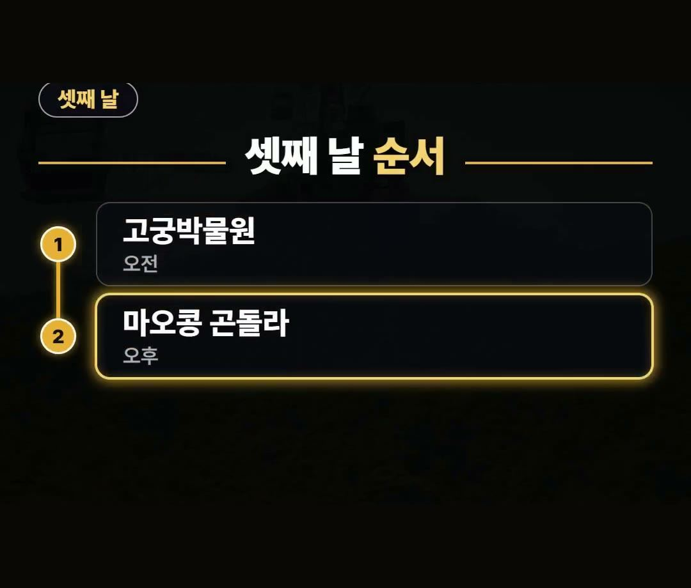
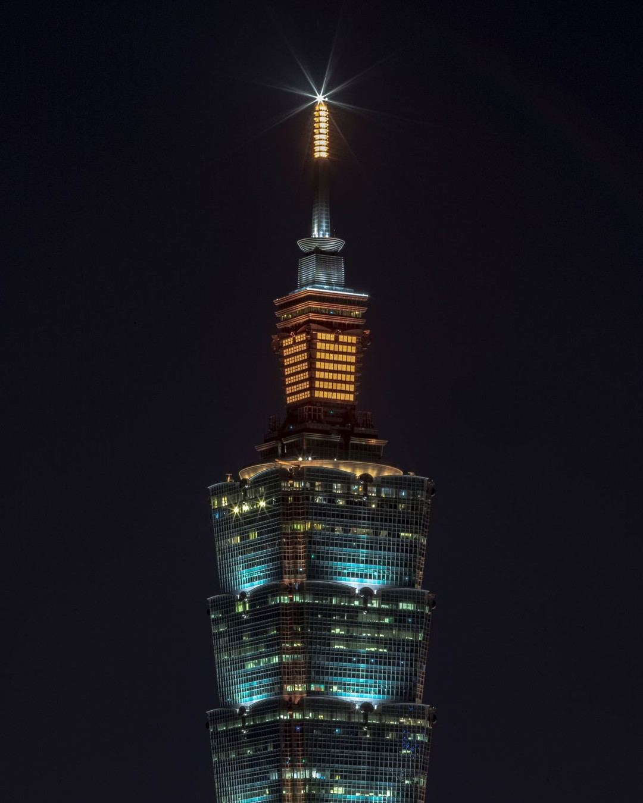

대만 여행 코스 공항철도부터 지우펀·스펀·101 야경까지 동선 정리
※ 이 글에는 제휴 링크가 포함되어 있으며, 링크를 통해 예약·구매하시면 일정 수수료를 받을 수 있습니다. (가격은 같습니다)
※ 이 포스팅은 쿠팡 파트너스 활동의 일환으로, 이에 따른 일정액의 수수료를 제공받습니다.
대만 여행을 계획할 때 동선을 어떻게 짜야 할지 막막하다면 딱 4가지 동선 원칙만 기억하면 됩니다.
공항철도 이용부터 주요 명소 방문 순서까지 하루 한 방향으로 묶는 일정 기준을 정리해 드립니다.
이 글을 끝까지 읽으시면 이동 시간을 효율적으로 쓰고 알찬 일정을 완성하실 수 있습니다.
안녕하세요, 돈 아끼는 연구소의 ★아낌 소장★입니다!
타이베이 여행 동선을 정할 때는 하루에 한 방향씩 묶어서 이동하는 것이 좋은 방법이에요.
제1터미널에서 타이베이 메인역까지 급행은 35분, 완행은 50분이 걸린다는 점을 꼭 기억하세요! 💡

대만 여행 코스 기본 방향과 대만 타이베이 날씨

대만 여행 코스를 준비할 때 동선을 제대로 잡는 것이 무엇보다 중요합니다.
타이베이는 하루에 한 방향씩 묶어서 둘러보는 것이 유리합니다.
도착한 날부터 순서대로 동선을 구성하면 이동 동선이 꼬이지 않습니다.
여행 준비 과정에서 대만 타이베이 날씨 정보를 찾아보시는 분들도 많은데요, 날씨와 함께 일정별 이동 방향을 차근차근 확인해 두면 깔끔하게 일정을 진행할 수 있습니다.
대만 여행 코스를 계획 중이라면 하루 한 방향 원칙을 기억해 두세요.

첫날 공항철도 급행과 완행 소요 시간
공항에 도착한 첫날은 공항철도를 이용해 시내로 이동하게 됩니다.
공항철도는 급행과 완행으로 나뉘므로 이동 시간을 미리 파악해 두는 것이 좋습니다.
- 급행: 제1터미널에서 타이베이 메인역까지 35분 소요
- 완행: 모든 역에 서며 제1터미널에서 타이베이 메인역까지 50분 소요

목적지와 상황에 맞게 급행과 완행 중 선택하여 이동하시면 첫날 일정을 차질 없이 시작할 수 있습니다.
둘째 날 오전 지우펀과 오후 스펀 일정

둘째 날 오전에 지우펀을 방문하는 것이 좋습니다.
지우펀을 오후에 넣으면 실수하기 쉬우므로 오전에 가는 것을 권장합니다.
가게가 문을 여는 오전 시간에 방문하는 것이 좋으며, 정오가 넘으면 이른 저녁까지 크게 붐빕니다.

- 지우펀 추천 방문 시간: 가게가 문을 여는 오전 시간대
- 정오 이후 상황: 정오가 넘으면 이른 저녁까지 크게 붐빔

오후에는 루이팡역에서 핑시선을 타고 스펀으로 이동합니다.
스펀은 옛거리가 짧아서 천등을 날려도 한 시간 안쪽이면 충분히 둘러볼 수 있습니다.
- 스펀 이동 방법: 루이팡역에서 핑시선 탑승
- 소요 시간: 옛거리가 짧아 천등을 날려도 한 시간 안쪽
셋째 날 고궁박물원과 마오콩 곤돌라

셋째 날은 오전에 고궁박물원, 오후에 마오콩 곤돌라를 방문하는 순서로 대만 여행 코스를 구성합니다.
- 셋째 날 오전: 고궁박물원
- 셋째 날 오후: 마오콩 곤돌라
마오콩 곤돌라는 정비로 쉬는 날이 있으니 가기 전에 운행하는 날인지 꼭 보셔야 합니다.
정기 정비 일정을 사전에 확인하고 방문 계획을 세우시기 바랍니다.
마지막 밤 타이베이 101 전망대와 대만 타이베이 날씨 준비

대만 여행 코스의 마지막 밤은 타이베이 101 전망대 입장권으로 야경을 관람하며 마무리합니다.
시원한 야경을 감상할 때는 대만 타이베이 날씨 상황을 고려하여 쾌적하게 둘러보시면 좋습니다.
데이터는 이심으로 미리 준비해 두시면 여행 중에 편리하게 이용하실 수 있습니다.
정리
- 타이베이는 하루에 한 방향씩 묶어 도착한 날부터 순서대로 이동합니다.
- 첫날 공항철도 급행은 제1터미널에서 메인역까지 35분, 완행은 50분이 소요됩니다.
- 둘째 날 오전 지우펀, 오후 스펀, 셋째 날 오전 고궁박물원, 오후 마오콩 곤돌라, 마지막 밤 타이베이 101 야경 순으로 진행합니다.
최저가 예약 링크는 아래에 모아 두었어요.
지금 쓸 수 있는 여행사 할인
- 📶 해외 데이터는 이심으로 미리 · 마이리얼트립 마이심 「대만 50% 1,200원~」 · 2개 이상 추가 할인 (마이심 화면 표시 기준 · 10/5 확인 · 값은 바뀔 수 있음)
※ 여행사 사정으로 조건이 바뀌거나 일찍 끝날 수 있어요. 예약 전에 여행사 화면에서 한 번 더 확인하세요. (2026-10-05 확인)
TAIPEI타이베이FREE📘 무료 타이베이 가이드 전자책공항·교통 · 돈 아끼는 법 · 맛집 · 근교 · 벌금·주의 · 귀국 날무료로 보기 ›📌 2026년 10월 기준 정보예요. 가격은 환율·시기에 따라 달라질 수 있어요.
영상 화면: Pexels (David Lomax, Guillaume Kremer, Jea Tang, Kenneth Surillo, Levi Wedge, Marek Piwnicki)
사진: Pexels (Jimmy Liao, mg shawn, Guillaume Kremer, 柏豪 黃)
사진: Pixabay (Peggy_Marco)